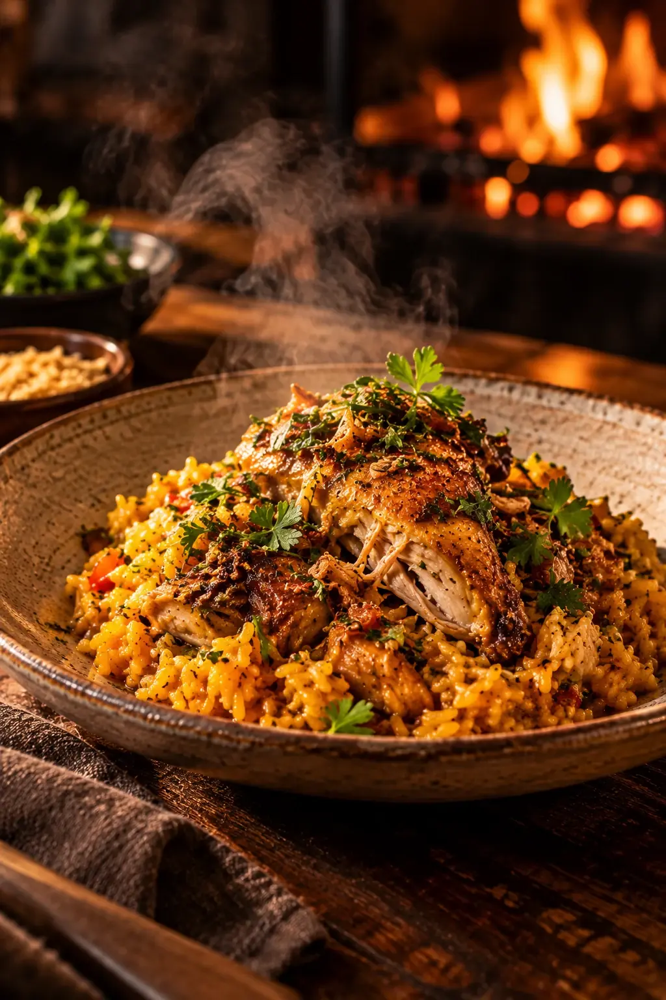

Ambiente
Tijolo aparente, madeira clara, linho cru e cerâmica feita à mão. A luz é baixa e quente, pensada para que a mesa seja o ponto mais iluminado da sala. São 72 lugares divididos entre salão, balcão e varanda.


Cozinha aberta
Não há parede entre quem cozinha e quem come. Do balcão da Mesa do Chef, até oito pessoas acompanham de perto o forno a lenha, a grelha e cada prato sendo finalizado.
Bar
Um balcão de pedra na entrada da casa, com coquetéis autorais feitos com cachaças de alambique, frutas brasileiras e infusões preparadas na cozinha. Um bom lugar para esperar a mesa, ou para ficar.
Ver drinks

Gastronomia
Pratos para dividir e pratos individuais, sempre a partir de receitas brasileiras. A sugestão da casa é pedir algumas entradas para o centro da mesa e seguir sem pressa.


Costela na Brasa, Arroz de Pato, Peixe do Dia.
Ver cardápio
Serviço
Atencioso sem ser cerimonioso. Nossa equipe prova o cardápio a cada mudança de estação para recomendar com propriedade, harmonizar vinhos e adaptar pratos a restrições alimentares.
Momentos especiais

-
Aniversários e celebrações
Avise na reserva. Preparamos a mesa e, se quiser, uma sobremesa especial para o momento do parabéns.
-
Mesa do Chef
Balcão em frente à cozinha para até oito pessoas, com menu em etapas definido pelo chef no dia.
-
Almoços de negócios
Mesas mais reservadas no fundo do salão e serviço no ritmo da sua agenda.
-
Eventos privativos
A varanda pode ser reservada para grupos de até 30 pessoas. Fale com a gente.
Reserve sua experiência
Terça a domingo, almoço e jantar. Rua Harmonia, 327 — Vila Madalena.
Reserve sua experiência